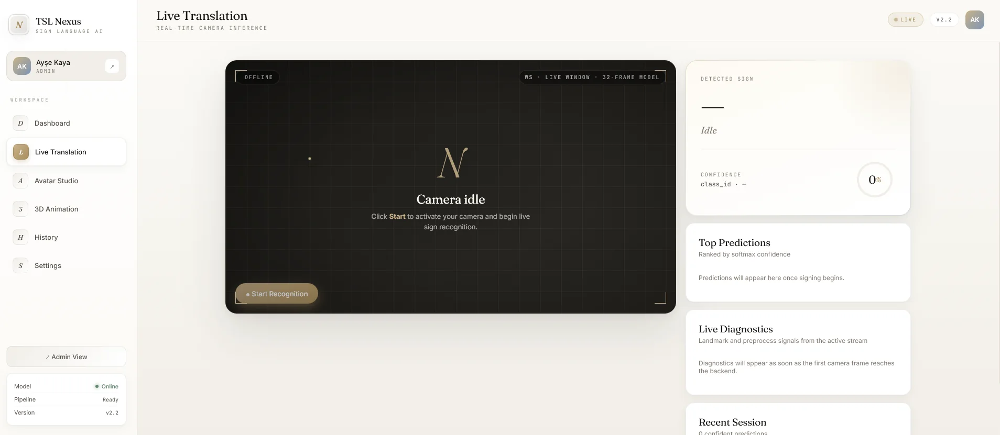
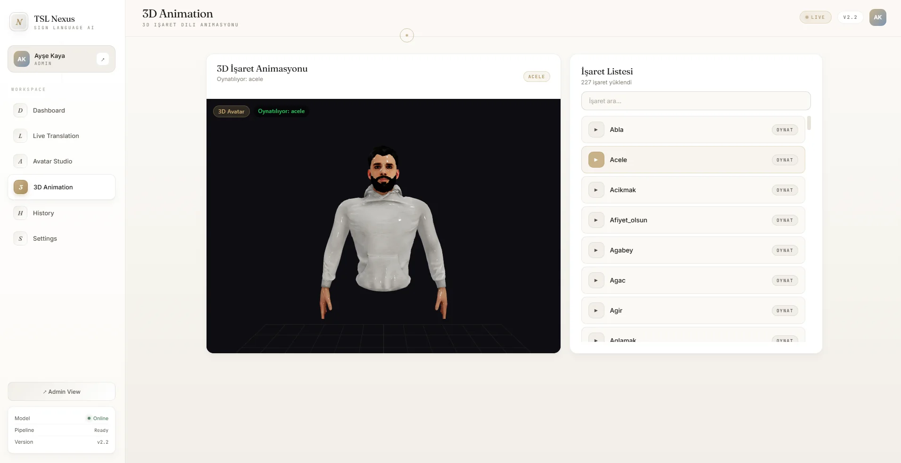

Eastern Mediterranean University · 2025–2026
Outstanding Project Award
SignTurk was selected as an outstanding graduation project by the Faculty of Engineering, Department of Computer Engineering.
View the award and productEastern Mediterranean University · 2025–2026
SignTurk was selected as an outstanding graduation project by the Faculty of Engineering, Department of Computer Engineering.
View the award and productSelected work
A focused selection of systems I can explain from architecture to trade-offs.



Real-time Turkish Sign Language recognition, approved-word sentence assembly, speech output, persistence, and 3D animation.
A dependency-free portfolio shaped with semantic HTML, expressive CSS, and focused JavaScript.
A tenant-aware support copilot designed to turn company knowledge into source-backed answer drafts while keeping the support agent in control.
Professional journey
Production-minded work across backend AI systems, retrieval-augmented applications, and enterprise software engineering.
Microsoft Türkiye
Aug 2026 – Sep 2026 · Ongoing
Completing a mentorship-based programme with weekly technical sessions and an independently delivered AI capstone: a local retrieval-augmented generation application built with Microsoft Foundry Local.
FlyRank.ai
Jun 2026 – Aug 2026 · Ongoing
Completing an accelerated Backend AI Engineering internship focused on automation, data-intensive applications, agent workflows, documentation, and token- and cost-aware AI system design.
İSKUR Holding
Jun 2024 – Aug 2024
Developed backend validation and automation logic for contract, barcode, inventory, and operational cost workflows in an enterprise SAP environment.
Profile
I am a Software Engineer specializing in Python backend and AI systems. I build production-oriented APIs and retrieval-augmented applications, with hands-on experience in real-time inference, computer vision, async data workflows, and measurable AI services.
 B.Sc. in Software EngineeringEastern Mediterranean University · 2021–2026ABET-accredited · 100% English-taught programme
B.Sc. in Software EngineeringEastern Mediterranean University · 2021–2026ABET-accredited · 100% English-taught programme
Final semester GPA
EF SET English proficiency · 71/100
Software Engineering graduate
Remote and relocation ready
Engineering toolkit
Grouped by the systems and projects where I use them.
Continued learning
Selected certificates and technical learning programmes.
Eastern Mediterranean University


Eastern Mediterranean University

BTK Akademi
Available for the right opportunity
Open to worldwide remote roles, onsite opportunities in Türkiye, and international relocation. My strongest direction is Software Engineering across Python backend, AI systems, and real-time inference.
eraykulkizaga@hotmail.com